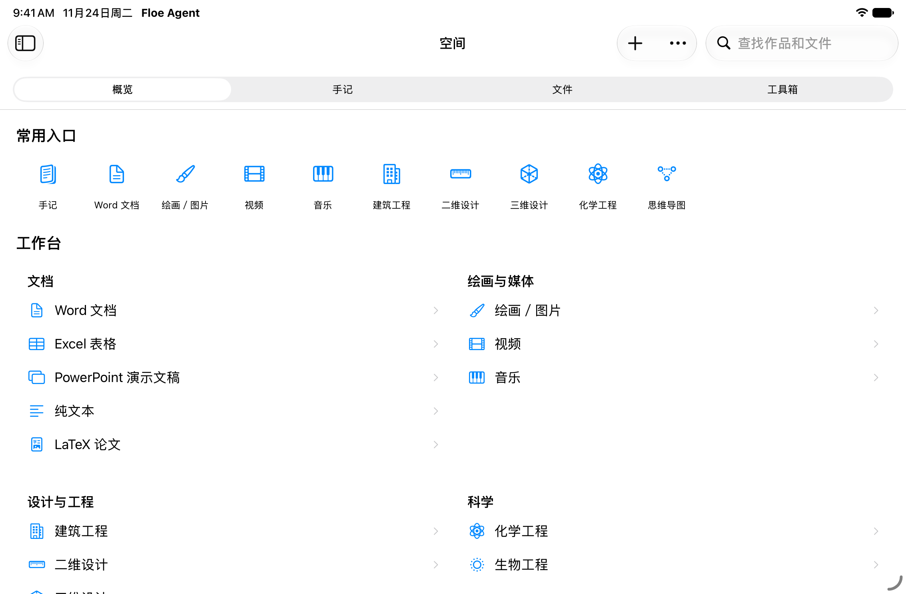
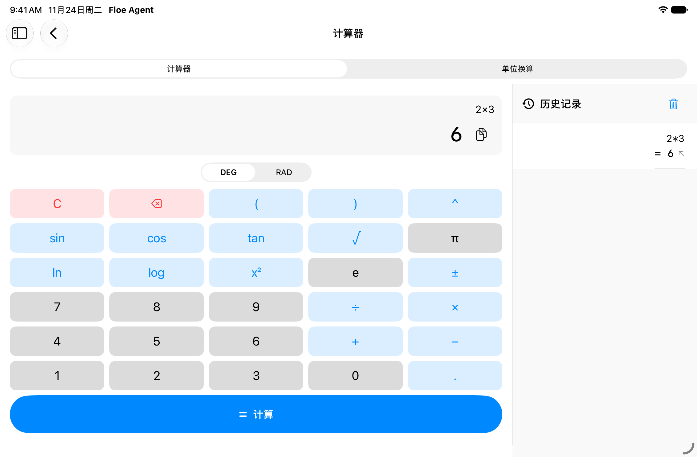
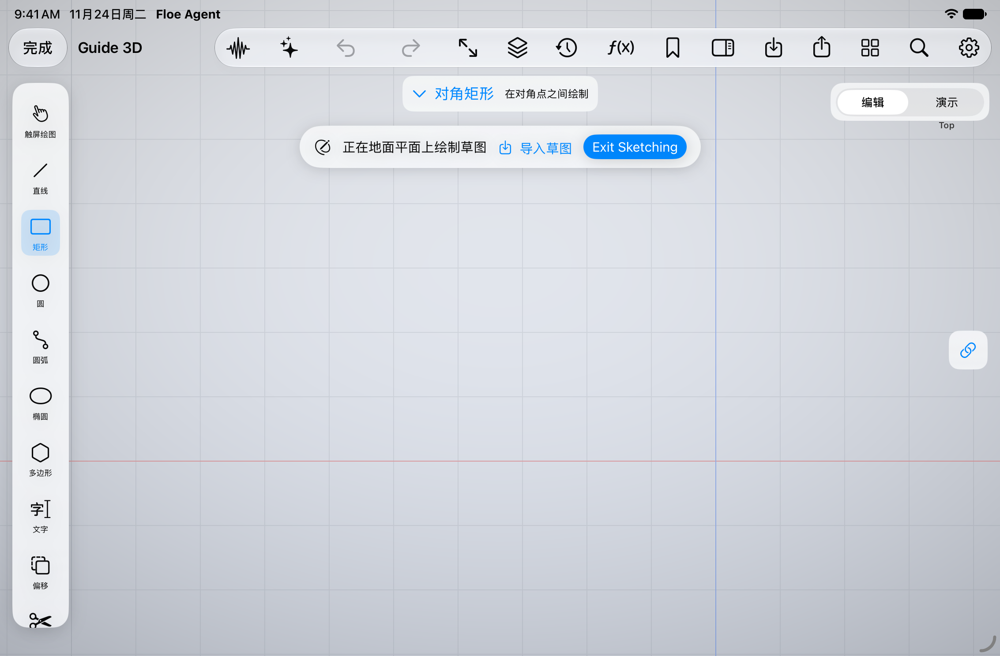

Espaço e bancadas especializadas
Visão geral
简体中文 · Manual do usuário · Início rápido
Tutoriais baseados em tarefas para a biblioteca pessoal do Floe e bancadas de trabalho dedicadas: arquivos e trabalhos de espaço, reuniões, música, diagramas, fabricação e impressão 3D, a caixa de ferramentas de rede e projetos de química. Para modelos, tarefas, notas e noções básicas do Office, leia o Manual do usuário Primeiro.
Qual construção eu preciso?
Os canais do Floe carregam diferentes conjuntos de recursos. Os rótulos abaixo identificam a linha de base de lançamento de um fluxo de trabalho; as versões atuais do canal e as datas de verificação são mantidas em STATUS_ATUAL:
| Rótulo | Onde você conseguiu? | O que cobre aqui? |
|---|---|---|
| 1.7.74 | App Store, iOS/iPadOS 26+ | O lançamento público estável. Apenas as seções rotuladas 1.7.74 se aplicam; o espaço e as bancadas de trabalho especializadas ainda não estão nesta compilação. |
| 1.8.5 linha de base | Lançamento original; Siga o status do canal ao escolher um instalador mais recente | Linha de base do tutorial original para espaço, reuniões, música, diagramas, fabricação e impressão, caixa de ferramentas e química. |
| 1.8.6 adições | IPA não assinada publicada; A disponibilidade de TestFlight é separada | LaTeX, esquematic/PCB, biologia e CAD entradas de análise de engenharia estão incluídas; PCB avançado e trabalho de simulação permanecem em andamento. |
| Outros editores especializados | Verifique a versão selecionada e o registro de integração | GIS, design de fonte, notação e Image Playground têm escopo e qualificação separados; as alterações de desenvolvimento não estão automaticamente no seu instalador. |
Encontre sua versão instalada em Configurações → Diagnósticos e Sobre. A disponibilidade por canal é rastreada em Status de lançamento e instalação; O Centro de liberação Lista todas as compilações publicadas.
1. Espaço: seus arquivos e trabalhos — 1.8.5

New screenshots in this guide show Floe 1.8.72 (393) in the iPad Simulator.
O espaço é a página inicial da barra lateral para tudo o que você possui pessoalmente no Floe: a biblioteca do Notes, além de uma biblioteca de trabalhos e arquivos editáveis.
Choose a workbench in Visão geral based on what you want to make. Name the project and choose where to keep it. Use Continue working Ou Files to reopen the project later.
| What you are working on | Which feature to use | Typical result |
|---|---|---|
| Class notes, reading annotations or reference material | Notas. Keep handwritten and annotated pages in documents. | Notes you can keep adding to |
| Meeting audio, transcripts and decisions | Meeting Notes. Keep the audio, transcript and highlights together. | Recording, transcript and minutes |
| Evolving drafts, reference images and candidate designs | Canvas in Creative Mode. Arrange and compare objects on a board. | A board you can keep arranging |
| Processes, sequences, relationships or system structure | Diagram. Use shapes and connections to show relationships. | An editable diagram |
| Photo corrections, cover art or a transparent icon | Drawing / image. Work with text, strokes, selections and masks on layers. | An editable image project and a PNG or other image |
| Cutting clips, adding music and lining up subtitles | Vídeo. Align picture, sound and captions on a timeline. | A video project and MP4 |
| Arranging melodies or keeping musical parts separate | Music project. Arrange notes, audio and instruments on tracks. | An editable song, audio or MIDI |
| Plans, parts, floors or circuits | 2D Design, 3D Design, Building Project or Electronics Design. Choose according to whether you are working with dimensions, solids, storeys or circuits. | A drawing, solid, building project, schematic or PCB |
| Viewing geographic data or inspecting regions by field | Map Editor. Work with layers, features, attributes and coordinate systems. | A map project or layer data |
| Typesetting a paper, equations and references | LaTeX document. Edit the source and compile to inspect the result. | LaTeX project and PDF |
| A quick calculation, conversion or measurement | Toolbox. Open the utility for the immediate job. | A calculation, dimension or angle |
Primeiro passo a passo:
- Abrir Espaço Da barra lateral. Tem quatro seções: Visão Geral, Notas, Arquivos e Caixa de Ferramentas.
- A visão geral mostra entradas de acesso rápido, trabalhos fixados, suas pastas e Continuar trabalhando (notas e trabalhos abertos recentemente).
- Arquivos listam seus trabalhos. Alterne entre lista e miniaturas e filtre por tipo: documentos, desenho/imagens, vídeo ou CAD.
- To start a particular kind of work, open its shortcut or workbench under Visão geral. To choose a destination first, open the folder under Files, then choose a type from +. Enter a name, check Location, and tap Create. Start blank notes and meetings from Notes → +.
- Use a importação para trazer arquivos existentes, ou Navegue por outros locais... Para acessar todos os arquivos do espaço de trabalho, arquivos de bate-papo arquivados e documentos mantidos (recuperados). Trabalhos excluídos podem ser restaurados de Excluído recentemente.
Propriedade e economia:
- Os trabalhos são armazenados em sua biblioteca pessoal no dispositivo. Eles não pertencem a nenhuma tarefa de bate-papo: excluir um bate-papo nunca exclui um trabalho, e excluir um trabalho nunca afeta arquivos de tarefas ou projetos. Exporte qualquer coisa importante antes de excluir.
- Os editores economizam no trabalho em si. Feche e reabra um trabalho de Continuar trabalhando para confirmar seu estado mais recente; cópias de recuperação permanecem em Documentos Mantidos até que você aceite o arquivo salvo.
- Um trabalho pode ter sua própria conversa de assistente (assistente de trabalho ou assistente de reunião para reuniões). Essa conversa faz parte do trabalho e mantém rascunhos não enviados; conceder acesso ao assistente a um trabalho não abre nenhum outro arquivo.
2. Reuniões: gravar, transcrever, minutos — 1.8.5
As reuniões combinam um caderno pessoal, gravação ao vivo, transcrição e minutos de IA em um trabalho, aberto a partir do Notes.
Primeira reunião:
- Abrir Space → Notes → + → Meeting Note, type a name and create it. In landscape, My Notes is on the left. Switch among Transcrição, Destaques E Meeting Assistant on the right.
- To capture a meeting, use Start Recording at the bottom right. To work with a file, open Recordings and Media → Import Audio or Video. Enable live transcription if needed, or transcribe a saved recording later.
- Review the transcript under Transcrição and organize minutes and to-dos under Destaques. Review highlights before inserting them into your notes.
- Ligar Minutos automáticos de IA Para manter as atas atualizadas da transcrição, ou peça ao assistente da reunião para responder a perguntas sobre esta reunião e organizar notas e tarefas. Rascunhos não enviados são mantidos.
- Exportar Minutos de texto Word ou PDF No menu de modelo de minutos e envie ações de acompanhamento de volta ao seu fluxo de tarefas.

Gravação contínua em compilações mais recentes: Faça uma pausa e retome dentro da linha do tempo de gravação da mesma reunião. Depois de terminar a gravação, reproduza-a e toque em um segmento de transcrição para procurar seu tempo. Renomeie os alto-falantes existentes ou mescle identidades que se referem à mesma pessoa; a separação do alto-falante depende do serviço de reconhecimento selecionado. Reabra a reunião para revisar sua gravação, carimbos de data/hora e transcrição corrigida.
Play an imported recording. In Recordings and Media, select the imported file and tap Play Full Recording. The player appears at the bottom of the meeting screen. Pause or scrub to review it. In the transcript, select a timestamped segment to jump to its position. Check the transcript, highlights and action items before exporting minutes.

Limites: As gravações permanecem no dispositivo por padrão; a transcrição na nuvem usa um serviço que você seleciona explicitamente e é cobrado por esse provedor. A qualidade da transcrição segue suas configurações de reconhecimento (consulte o manual do usuário §16).
3. Projetos musicais — 1.8.5
Os trabalhos de música espacial mantêm os fluxos de trabalho de arranjo, teclado, mixer e DJ em um único projeto.
Primeiro projeto:
- Em Espaço → Arquivos, crie um Música Trabalho e nomeie-o.
- A bancada de trabalho oferece arranjos, além de superfícies dedicadas: rolo de piano, grade de bateria, teclado e decks de DJ, com um mixer e efeitos para faixas.
- Importe material de áudio ou MIDI ou peça ao assistente para propor edições; cada proposta mostra o que muda antes de você aceitá-la.
- Salvar é automático no trabalho. Renderize quando quiser um arquivo de áudio, depois verifique o recibo em relação ao arquivo renderizado real e compartilhe-o ou exporte-o do trabalho.
Música nesta atualização de teste: Em Pontuação, alterne entre a notação Staff e Numered enquanto edita e salva a mesma pontuação. Sons de desempenho aberto para escolher sons de instrumentos sintetizados para cada parte. Executar e adicionar renderiza áudio, insere uma nova faixa no head de reprodução atual e retorna ao arranjo quando concluído. A reprodução comum é para audição. Volte para a equipe para ver marcas complexas omitidas da visualização numerada.
Grave a partir do head de reprodução em compilações mais recentes: Mova o head de reprodução para o início pretendido, escolha gravação de áudio ou MIDI e, em seguida, execute. Faixas não silenciadas existentes são reproduzidas ao lado e os clipes mais antigos são mantidos. Pare, faça o teste do novo clipe na mesma linha do tempo, depois salve e reabra para verificar sua posição. A gravação do arranjo, as visualizações de ativos, o monitoramento e a gravação do DJ têm seus próprios controles; confirme Pare na superfície apropriada antes de sair.
O teclado usa a altura disponível para suas teclas. Em telas amplas, o inspetor Mostrar / Ocultar inspetor abre ou colapsa o inspetor direito. Expanda o editor inferior para uma área de desempenho maior.
Limites: A edição assistida por IA usa seus modelos configurados; a reprodução e a renderização são executadas no dispositivo e seguem os recursos reais do projeto.
4. Diagramas e a tela mista — 1.8.5
Diagram works well when the sequence or relationship matters. For an approval process, give each action a shape and connect the shapes in order. Reopen the work from Space → Files to check that its shapes and links are complete. Review the assistant's proposed changes before applying them.
Creative Mode Canvas keeps notes, images, documents and options for a topic together. Select an object to edit its content, or move it to rearrange the board. When comparing several image or drawing versions, keep the deliverables in their workbenches and use the canvas to record references and comparisons. See the free-form editing walkthrough.
5. Fabricação e impressão 3D — 1.8.5
Usinagem e impressão abertas a partir de um documento CAD Manufatura Entrada.
Passo a passo de usinagem:
- Abra seu design 2D/3D CAD e entre em Fabricação. Escolha a máquina primeiro.
- Defina estoque, coordenadas e operações; o assistente pode ler o objeto atual e sugerir operações dentro das permissões da tarefa.
- Execute a visualização para ver o material sendo removido ao longo do caminho da ferramenta; verificações de colisão implementadas são relatadas à medida que são executadas.
- Salve o resultado, exporte o STL ou o caminho da ferramenta e reabra o resultado salvo para verificar. Os programas de células de fabricação (multi-fuso/multi-torre) são salvos de forma independente e podem ser lidos mais tarde.
Passo a passo de impressão 3D:
- A partir de um projeto CAD ou de um arquivo, prepare um projeto de impressão; Floe copia a geometria atual para ele.
- Organize modelos em placas, adicione ou duplique peças e ajuste as configurações por placa, como altura da camada e preenchimento.
- Escolha uma configuração de máquina: tamanho da cama, coordenar a origem, deslocamentos do bico, código G personalizado de início/fim/mudança de ferramenta e orientação da plataforma de resina para impressoras de resina.
- Slice; uma fatia concluída abre o Preview automaticamente, e o resultado salvo permanece vinculado a esses parâmetros. Exporte o código G que sua impressora espera e verifique-o em seu slicer ou host.
Limites: As visualizações de usinagem relatam apenas verificações implementadas — elas não são uma certificação completa de segurança da máquina. Os drivers de impressora USB nativos não estão incluídos nesta compilação; use o caminho de transferência normal da sua impressora. A impressão física e a usinagem permanecem regidas pelas capacidades reais e regras de segurança da sua máquina.
6. Caixa de ferramentas de rede — 1.8.5
Abrir Space → Toolbox. Choose a shortcut at the top, use the categories below, or search by tool name in the upper right. Toolbox holds both network sessions and day-to-day measurement tools.

- Diagnósticos: Ping, traceroute, DNS, verificações de porta, descoberta de LAN, informações de Wi-Fi e verificações de roaming. Nomes Wi-Fi e BSSIDs são lidos somente com autorização do sistema; nada verifica até que você o inicie.
- Conexões e sessões: Clientes HTTP, WebSocket e MQTT, um assistente serial (TCP, UDP ou Bluetooth; USB precisa de um iPad suportado e drivers ainda não enviados), além de terminais e espaços de trabalho remotos VNC.
- Análise: Navegador de captura com importação de captura de pacotes (PCAP/PCAPNG); a análise de IA relata o progresso, pode ser interrompida e expira honestamente.
- Utilitários: Formatação JSON, conversão de codificação, códigos QR e somas de verificação.
Ferramentas de medição e diárias em construções mais recentes: Escolha uma ferramenta entre as principais entradas, categorias ou pesquisas que podem ser deslizadas; a lista completa permanece abaixo.
- Nível, Sensores de Movimento, Bússola, Pressão e Altitude: Comece a ver as leituras, use o zero oferecido, bloqueie ou grave controles e pare a coleta quando terminar. A bússola mostra o norte magnético; a altitude baseada na pressão mostra a mudança relativa.
- Régua e Extrator, Medição da Câmera, Medição de Foto: Calibre a régua da tela contra um objeto real primeiro. A medição de RA precisa de hardware suportado. Em uma foto, defina um comprimento de referência conhecido antes de medir comprimentos, ângulos ou áreas no mesmo plano e, em seguida, exporte anotações, se necessário. Verifique novamente a calibração após alterações na janela ou na tela.
- Calculadora e Conversor, Localização e Mapa: Avaliar expressões ou trocar unidades e copiar resultados. Depois de conceder acesso à localização, inspecione a posição e a precisão e, em seguida, salve ou compartilhe explicitamente um local ou envie-o para o Notes.
- Análise de Som, Lupa e Luz, Digitalização e Reconhecimento: Inicie o microfone ou a câmera explicitamente. Inspecione os níveis e o espectro de áudio relativos, amplie ou congele uma visualização ou escaneie códigos e texto e exporte resultados. As leituras de áudio não são calibradas com pressão sonora ambiental.
- Cronômetro e temporizadores: Grave voltas, gerencie contagens regressivas nomeadas e permita alarmes do sistema quando solicitado. Consulte o manual do usuário §17 para temporizadores de tarefas em vários estágios; alarmes do sistema e a execução de acompanhamento do modelo são resultados separados.
Uma medição cobre um ponto final e um caminho, não toda a sua rede. Os relatórios exportam apenas o que você escolher.
Calculate, convert and measure
- Abrir Calculator and Conversion, enter
2×3in Calculator, and tap Calculate. The result, 6, also appears in History. Use the copy icon beside the result when you need it elsewhere. - Abrir Unit Conversion, Escolha Length, then millimetres and centimetres. Entering 1 gives 0.1 cm. Swap the units with the arrows to see 1 cm become 10 mm.
- Return to Toolbox and open Ruler and Protractor. In Angle, drag the handles and read the angle between the lines. Before measuring a real length on screen, align the blue marks to a reference of known size, then finish calibration. Before calibration, length appears in screen points.


7. Projetos de química — 1.8.5
Crie um Projeto de química Do Espaço → Novo. O editor de estrutura nativo salva estruturas no projeto, os registros de cálculo permanecem anexados a ele e as imagens de estrutura podem ser referenciadas no Notes. O recálculo pesado é executado em seu ambiente de execução configurado — verifique o ambiente antes de um longo trabalho.
<a id="8-in-the-next-update--next-update-not-in-public-builds"></a>
8. Bancadas de trabalho adicionais e requisitos de construção
1.8.6 notas de versão Registre essas adições no instalador publicado:
- LaTeX — Uma bancada de trabalho do projeto, dobragem de fonte e pesquisa de texto completo PDF, com estado de leitura/pesquisa retido em alterações em tela cheia.
- Eletrônica/PCB — Edição esquemática/PCB, interação de tela, verificações de regras de design e sincronização; atualizações PCB-para-esquemáticas incluem uma visualização e confirmação de diferença.
- Biologia e análise de engenharia CAD — Entradas de bancada nativas adicionais no Espaço, com trabalho de edição, visualização e salvamento/reabertur incluído no escopo de lançamento.
Algumas operações avançadas de PCB e simulação permanecem em desenvolvimento; drivers seriais USB nativos não estão incluídos nessa compilação. Essas notas de lançamento não estabelecem que todos os recursos especializados ou alterações de origem posteriores foram enviados.
Para GIS, design de fonte, notação e Image Playground, verifique o Plano de integração especialista-editor, Registros de integração ativos E as notas de lançamento selecionadas. A disponibilidade é específica do recurso; a integração de origem por si só não estabelece a entrega.
Start a sketch in 3D Design
- Pol Space → Overview, open 3D Design, name it, and check its location. Open Sketch on the left for lines, rectangles, circles and other tools.
- Escolher Sketch → Rectangle and select a reference plane when prompted. To draw with your finger, enable Touch drawing using the hand icon on the left, then drag between opposite corners on the grid. Check that the four edges close. If dragging pans the view, check the switch, the rectangle tool and the current plane.
- Toque Exit Sketching and select the interior of the closed profile. Under Features → Extrude, set the distance to
2 mm, Escolha New Body and confirm. A5 × 3 mmrectangle should produce a solid2 mmthick. If you cannot select the interior, return to the sketch and look for gaps or overlaps. - Close and reopen the project by name in Space → Files to confirm the solid was saved. For a mesh delivery, use the share icon at the top and choose STL → Save to Files. Check its dimensions and orientation in the receiving app. Keep the 3D project for further editing. See the unified 3D workbench for more.


Choose the right workbench
| What you want to work on | Where to start in Space | What to check |
|---|---|---|
| Floor plans with rooms | Overview → Building Project. Choose a storey before editing walls, rooms or drawings. | Units, the selected storey, and which objects belong to it after reopening. |
| 2D lines and dimensions | Overview → 2D Design, or open an editable DXF or DWG from Files. | Selected layer, objects, dimensions and units. Save and reopen. |
| A typeset paper | Overview → LaTeX Document. Edit the project source and compile the PDF. | Build log and PDF pages. Keep both the project and the delivery PDF. |
| Schematics and PCB layouts | Files → + → Electronics. Edit the schematic before reviewing the component and net changes in PCB. | Review sync differences before applying and run design rule checks after routing. |
| Map data | Files → … → Import geographic data…, or choose Map Editor from the new-project menu. | Select a specific layer and check its coordinate system, visibility, attributes and exported geometry. |
| A molecule for a lesson | Overview → Chemistry Project. Open or draw a molecule in the structure editor. | Structure diagram, saved project and the status of any calculation. |
| Sequence material for teaching | Overview → Biology Project. Open a project and inspect a record or annotations. | Record name, annotation range, and which file is the original or an exported copy. |
Available formats and workbench options depend on the installed build.
2D Design: draw a rectangle and deliver a DXF
- Create a drawing in Space → Overview → 2D Design. Check that the upper-right unit is mm, enable Touch drawing on the left, and choose Rectangle. Drag between two corners on the grid. The example measures
6 × 4 mmwith a20 mmperimeter. If the size differs, check the units, snapping and all four corners. - Use the share icon at the top, choose DXF, and choose a destination in Files. Open the DXF in the receiving CAD app to check that the profile is closed and its dimensions match the project.
- Toque OK, then reopen the drawing by name in Space → Files and check its four edges. Use this drawing when continuing in Floe.

Maps: import, edit attributes and export GeoJSON
- Choose a GeoJSON file in Space → Files → … → Import geographic data…. Select its layer on the left, then tap Fit layer in the map toolbar. A small region may be hard to see at the initial world scale. Check that the layer is visible and contains features, then verify its coordinate system.
- Abrir Table, select a feature and tap the field to edit. Press Return to apply the value and wait for it to save. For a test polygon with a
namefield, give it a new name while keeping its boundary. Reopen the project and the attribute table to confirm the value persisted. - Touch and hold the specific layer row and tap Export layer to open Export data / project. Choose GeoJSON and turn off Include all vector layers when you only want the selected layer. With the coordinate-system field left blank, GeoJSON uses EPSG:4326. Name the export and tap Aplicar. Open the result and check the feature count, attributes and geometry.
- If the import reports Unexpected EOF, export a complete file again from the original GIS project or check whether the copy was truncated, then retry. Once it succeeds, open the new project in Space → Files to verify the layer.


Economizando, exportando e ajudando
- Confirme os salvamentos fechando e reabrindo o trabalho; guarde cópias de recuperação até que o arquivo aceito seja verificado.
- Exporte ou compartilhe antes de excluir; os trabalhos excluídos podem ser recuperados de Excluídos Recentemente apenas no mesmo dispositivo.
- Perguntas e relatórios de bugs: Problemas GitHub (Canal de suporte primário); descreva a compilação, o dispositivo e as etapas. Os uploads de diagnósticos são voluntários e não têm garantia de tempo de resposta — nunca inclua senhas, chaves ou arquivos privados.